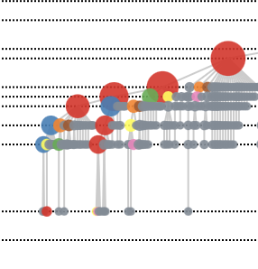

D3 JS
Mapbox GL JS
Python
R
Sunny
Yun
Zhao
Percolation Analysis on the City of London

D3 JS
Python
Modelling a percolation process on the modern road network of the City of London.
Hierarchy of Percolation Clusters
R
D3 JS
The mergers of percolation clusters modelled as a hierarchical tree. From my master's dissertation analysing the road network of mainland Europe.
Sustainability Educational Video

QGIS
Mapbox GL JS
A sequence of flyovers revealing the location of a Los Angeles area school district in the Ballona Creek Watershed. Ongoing collaboration.
Rising Energy Prices

D3 JS
fullPage JS
A group project exploring factors influencing energy prices. I created the 'Energy and Growth' section.